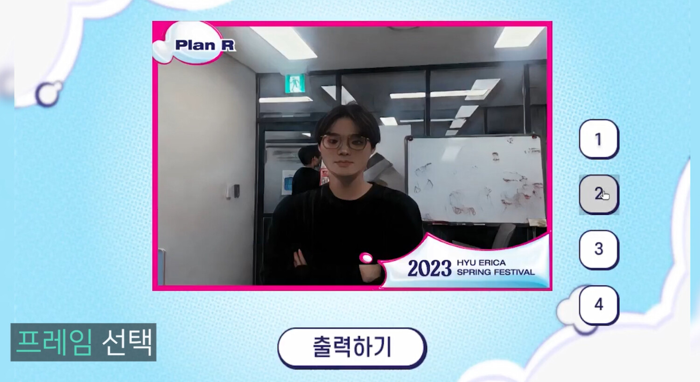
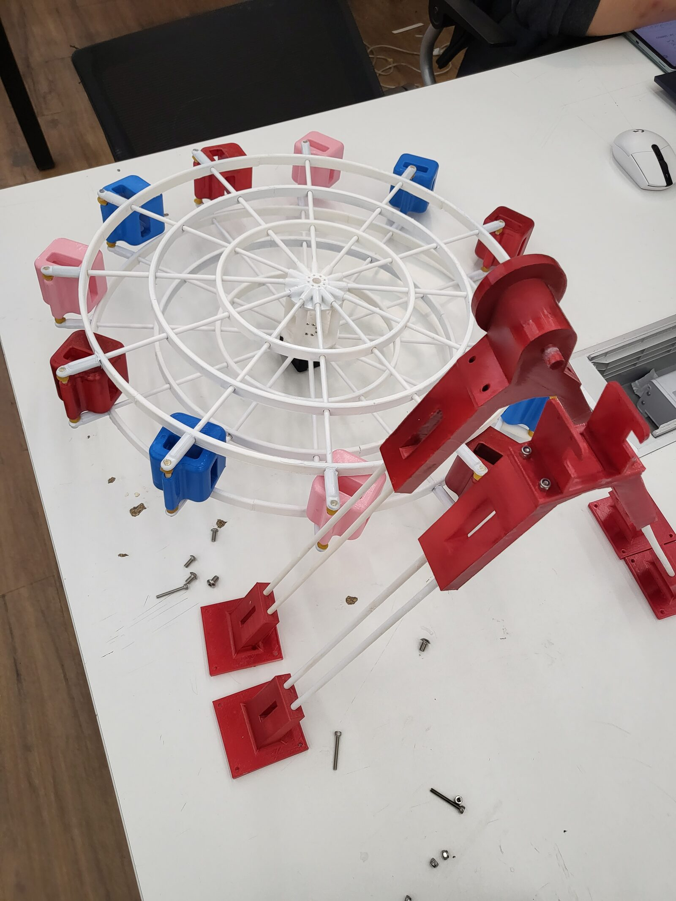

SnapBot
An Autonomous Robotic Photographer — Human-Tracking Manipulation Meets Generative Style Transfer
Abstract
SnapBot is an autonomous robotic photographer that unites real-time robotic manipulation with generative AI to deliver a complete, hands-free photo-studio experience. A six-degree-of-freedom Universal Robots collaborative manipulator, equipped with an eye-in-hand camera, detects and tracks a person in real time, autonomously servoing its end-effector to keep the subject centered and well-framed before capturing a portrait. The captured frame is transformed by a generative style-transfer network (AnimeGAN) into a stylized rendition; the subject selects a favorite, composites it into a themed frame, and receives an instantly printed photograph. The manipulator's tracking and motion behaviors are developed and validated in NVIDIA Isaac Gym simulation before transfer to the physical robot, and the full system — perception, control, generation, and printing — is orchestrated through ROS and containerized with Docker for reproducible deployment. SnapBot was demonstrated live at the 2023 Korea SW Talent Festival and the 2023 HYU ERICA Spring Festival, where it served as an interactive AI photo studio that a robot operates for you.
How SnapBot Works
Human Tracking & Autonomous Framing
SnapBot begins by finding its subject. The eye-in-hand RGB camera on the collaborative arm detects the person and continuously tracks them, servoing the end-effector so the subject stays centered and well-composed. The tracking and reaching behaviors were first developed and stress-tested in NVIDIA Isaac Gym simulation, then transferred to the physical manipulator — letting the team iterate on motion safely before ever deploying around people.

Generative Style Transfer
Once a shot is captured, SnapBot presents a set of candidate portraits and re-renders them with AnimeGAN, a generative network that turns an ordinary photo into a stylized, illustration-like rendition. The subject simply taps the version they like best — no editing skills required.
Frame Composition
The chosen portrait is composited into a themed photo frame — here branded for the 2023 HYU ERICA Spring Festival — with several layouts to choose from, turning a quick capture into a finished, personalized keepsake.


Instant Printing
Finally, SnapBot sends the framed image to a dye-sublimation photo printer and hands the visitor a physical print — closing the loop from robotic perception all the way to a souvenir in your hand in under a minute.
Video
End-to-end demo: human tracking, capture, AnimeGAN restyling, frame selection, and printing. Open in a new tab
SnapBot in the Wild

A festival-goer is photographed live by SnapBot — the arm tracks and frames the subject on its own.

The SnapBot platform: a Universal Robots collaborative arm with an eye-in-hand camera on a custom rig.

The Plan-R booth, with a custom 3D-printed wheel showing off freshly printed portraits.

“An AI photo studio operated by a robot” — the Plan-R team at the 2023 SW Talent Festival.

Building the custom 3D-printed wheel that displays the printed photographs.

Running the full perception–control–generation–print stack live at the outdoor booth.
BibTeX
@misc{snapbot2023,
title = {SnapBot: An Autonomous Robotic Photographer with Human
Tracking and Generative Style Transfer},
author = {Choi, Chanyeok and Kim, Jeonghan and Nam, Yunjae and Lee, Wanggeon},
year = {2023},
howpublished = {2023 Korea SW Talent Festival (SW인재페스티벌), Plan-Real},
note = {Project page: https://angledsugar.github.io/snapbot},
url = {https://github.com/Plan-Real/Snapbot}
}